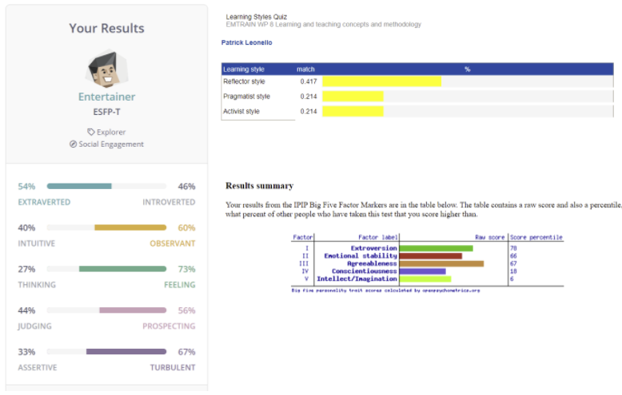
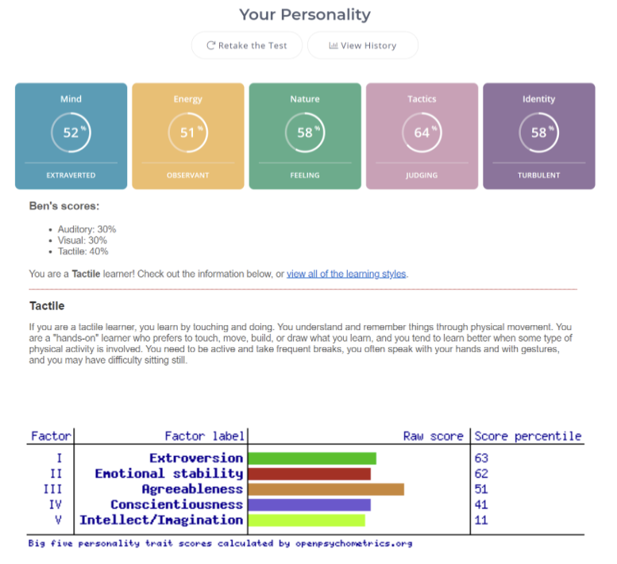
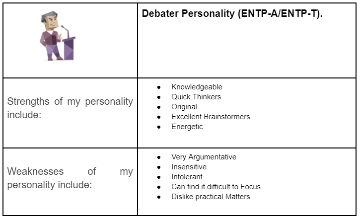
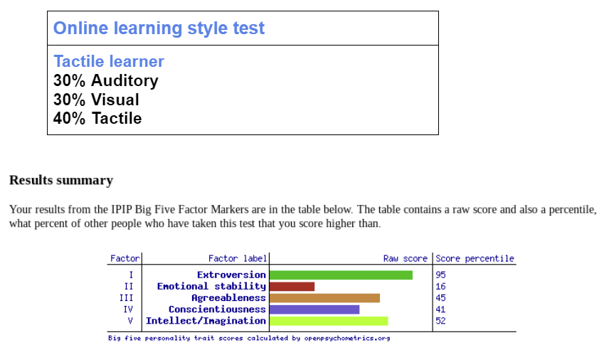
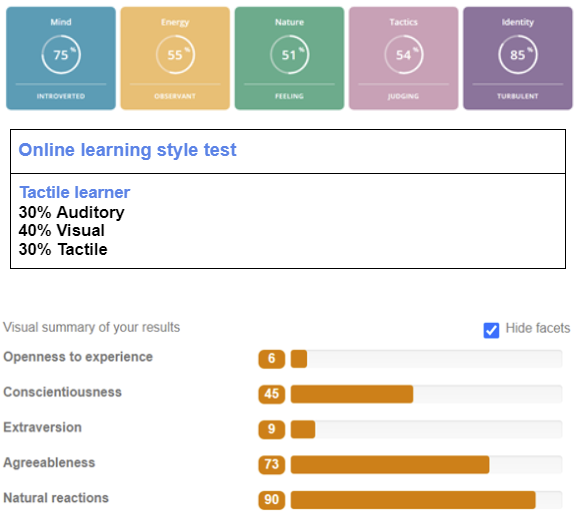
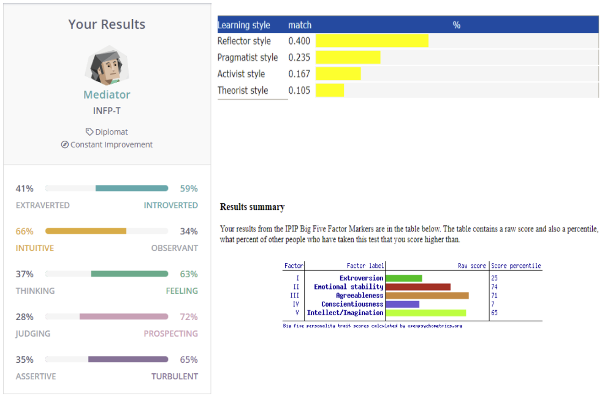

Patrick is 21 years old and was born in Australia. He is of Italian descent, and English is his primary language. Still, he can pick up some Italian from being around his Nonna (grandma), teaching her to use modern-day technology. Patrick graduated VCE from Loyola College Watsonia in 2017, then completed a certificate four and a diploma in screen and media, live production and Technical services in 2018-2019. Patrick enjoys creating and editing videos specifically; he enjoys the technical element of fluently putting together a coherent story that conveys emotion and a story from just raw footage. He has worked with Floorworld and AFLW star Monique Conti creating corporate style videos. Patrick has always been interested in pursuing Information Technology. Patrick is Interested in UCD (user-centred design). Developing applications and websites and combining different design elements and principles such as contrast, colour, typefaces can affect how the user interacts and feels and how that can influence their experience in positive and negative ways. In high school, Patrick always chose the I.T. and Computing subjects, where he learnt the basics of database management, web design, infographics, and a little bit of game development. Other than that, the first few weeks of the bachelor of information technology has been the bulk of Patrick I.T. experience learning the basics of programming using Python, management and development of databases, and user-centred design and web development using HTML.
Ben spent the first eight years of my education at Stella Maris Catholic Primary School in Burnie Tasmania, then spent the next six years at the sister school, Marist Regional College, where he finished grade 7 to grade 12. Ben is now commencing his first year in a 3-year bachelor's degree in Information Technology. One of Ben's hobbies is PC hardware and Assembly. He enjoys looking into current PC companies and their hardware, like Ryzen and Intel CPU developers and Razer/ Corsair with their gaming peripherals. Ben's interest in IT began when he was 8 Years old through gaming which made him slowly more experienced and comfortable with IT systems and technology. There hasn't been any specific moment or person that sparked Ben's interests in IT; it was the collection of experiences with technology throughout his life that has led to IT. Technology is the main focus of his life choices. Ben has used many different consoles and technology, meaning he has experience in many operating systems and their many various errors and problems. Ben wants to learn more about IT to have a possible career in the field and know more about IT to assist him with different errors he could potentially run into in the future.
Sam Paredes is currently studying for a Bachelor of Information Technology in their first year at RMIT. He is of South American and European descent but born and raised Australian. Sam’s hobbies include going out on the weekends with mates and going to bars and clubs, bingeing TV shows and films, gaming and listening to and making music. Sam learnt how to use music producing software like Ableton and Garageband and created an entire album with beats made from scratch during quarantine. When moving to Melbourne, he attended Mckinnon Primary College and finished Primary Education there. Sam attended Mckinnon Secondary College for high school and completed VCE studies with an 80+ ATAR and was awarded a VCE award for his excellence in Units 3&4 Data Analytics/Informatics Sam also duxxed The class and received a 40+ study score for it. Sam has been interested in Information Technology since he was in the 4th grade and received an award for his “Advanced IT skills”. Sam has always wanted to learn more about what technology is advancing in the future. Ever since Sam was a kid, he was glued to the computer screen and was fascinated by all you could do with the Internet and technology.
 Nathan has lived in Melbourne, Australia, all his life. He completed year 12 last year in 2020. Nathan enjoys watching TV shows, his favourite being Get Smart. Nathan also has a passion for Aircraft accident investigations, precisely how engineering knowledge is used to investigate them. Nathan's main interest in Information Technology is Computer programming and how people interact with it in everyday lives. Nathan wants to be involved in putting together code that makes a difference in daily lives. Nathan understands that Computer code is everywhere, and we deal with it every day; whenever we open our phone to check the weather or news, there is code behind it, whether it is HTML for a webpage or Python for an app. In high school, Nathan completed a subject called Data Analytics, where he learned about problem-solving methodology and data analysis and mining and project management. He also learnt to write programs in HTML, as well as Java and Python.
Michael Scaringi was born and raised in Melbourne, Australia. He completed secondary school then moved to Ballarat with his family, eventually moving back to Melbourne in a shared house with a couple of friends. Michael has a robust italian background and can speak partial Italian. Michael’s interest in IT started when he began creating and uploading videos to youtube about the monthly Mario Kart tournaments he has with friends. Michael started last year using such applications as Photoshop, Premiere Pro, and After Effects, which he enjoyed experimenting with. He hopes that adopting Information knowledge and skills will help give a deeper understanding and help improve his content in the future.
After Joshua graduated from high school, he began an International Studies degree at Deakin University. Joshua's major was Chinese, and during the degree, he studied in Shanghai, China, for six months. After Joshua returned, he changed his degree to a business/international studies double degree. Still, he ultimately found that he didn't enjoy it and couldn't find many prospects in job opportunities. Joshua has worked 28 different jobs since the age of 15, the most current and longest one being a bartender role. Joshua's interest in IT began when he was younger; thanks to his favourite Properties such as Disney's Tron and the Digimon series, both had highly fantasized elements of tech. He enjoyed studying IT in secondary school but never continued because of advice from a careers adviser. His love for video games and attempting to learn the development of games helped direct him back to university to study IT. Recently Joshua has begun working on coding, app making, website-making, game making etc. He has always wanted to make video games and found more enjoyment with the code side than the actual game design part.